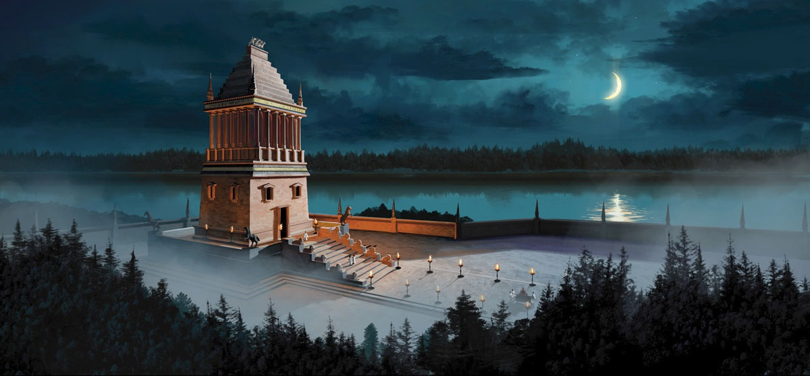

|
Mausoleul din Halicarnas

Mausoleul din Halicarnas
Mausoleul din Halicarnas (azi Bodrum, Turcia) a fost opera arhitecţilor Pytheos şi Satyros şi a sculptorilor Scopas şi Timotheos. Mausoleul poartă numele guvernatorului local Mausol, care a fost guvernatorul (satrapul sau regele) provinciei elenistice Caria (377-353 î.Ch.) pentru care fusese destinat, ca mormânt-templu. Acest monument arhitectural a fost considerat una dintre cele şapte minuni ale lumii antice.
Regiunea, importantă din punct de vedere strategic pentru navigaţia din Mediterana orientală, era adeseori teatrul unor conflicte militare. În anul 556 î.Ch., regele Persiei Cyrus al II-lea a cucerit această zonă, care îi oferea acces direct la mare. Imperiul său se întindea la est până la fluviul Indus, la nord până la ţărmurile Mării Negre şi la sud până la Oceanul Indian. Imperiul nu putea sa aibă un guvern centralizat, din cauza situaţiei mijloacelor de transport şi de comunicare din acea vreme. Regii perşi puneau în locul lor un guvernator regional, numit satrap. Începând din anul 377 î.Ch., satrapul Mausol guverna Caria, regiunea de coastă, din sud-vestul Asiei Mici. Tatăl sau, satrapul Hekatominos, contribuise la înflorirea economică a portului Halicarnas. Mausol a continuat extinderea acestei capitale de provincie. De asemenea, s-a îngrijit să lase moştenire oraşului un monument nepieritor, în amintirea tatălui său şi a sa, pe locurile unde ei au funcţionat ca guvernatori. Prieten al culturii elene, el i-a chemat pe arhitecţii Satyros şi Phytheos şi pe sculptorii Scopas şi Timotheos, toţi din Grecia.
Ei s-au deosebit de ceilalţi concurenţi prin proiectul lor, pe cât de neobişnuit, pe atât de impunător: nu au conceput un monument scund, tradiţional in Grecia, ci o construcţie foarte înaltă. Mausol nu a putut însă să vadă terminat mausoleul său. El a murit în anul 353 î.Ch. Văduva sa, Artemisa, care îi era şi soră, a continuat lucrările începute, nu fără intenţia de a ridica un monument şi pentru ea însăşi. De aceea, pe cvadriga ce urma să încoroneze monumentul s-au construit statuile cuplului princiar, Mausol şi Artemisa. Artemisa nu a trăit destul de mult pentru a vedea opera terminată. A murit la doi ani după soţul şi fratele ei. Arhitecţii au continuat construcţia până la sfârşit (335 î.Ch.), realizând un monument şi pentru propria lor glorie, considerat mai târziu ca una din minunile lumii antice. Pe un soclu înalt, cu cinci trepte, cu dimensiunile de 39 m lungime şi 33 m lăţime, se gasea un suport lung de 33 m, lat de 27 m şi înalt de 22 m.
Pe acesta se înălţa templul funerar propriu-zis, susţinut de 39 de coloane, având 39 m fiecare (singura parte ce amintea arhitectura greaca tradiţională). Imediat deasupra acoperişului se mai inălţa o piramidă cu 24 de trepte, pe al cărei vârf trunchiat era aşezată cvadriga. Cu o înălţime totală de 49 m, mausoleul ar fi putut echivala în zilele noastre cu o clădire cu 16 etaje. Mâna omului nu a distrus cel mai celebru monument funerar al antichităţii, al carui nume a devenit generic pentru toate marile morminte construite mai tarziu. Marii cuceritori, cum ar fi Alexandru cel Mare, care a cucerit oraşul Halicarnas în anul 334 i.Ch., au cruţat monumentul şi l-au tratat cu respect. De-abia in secolul al XII-lea d.Ch., un puternic cutremur a distrus monumentul, rezervându-i o soartă tristă, cea de carieră pentru construirea castelului fortificat Sf. Petru al Cruciaţilor Ioaniţi (în sec. XVI).
Resturile Mausoleului din Halicarnas, aflate în partea de nord a oraşului Bodrum (la cca 1 km de centru) sunt cuprinse într-un muzeu în aer liber, fiind accesibile publicului.
×

|